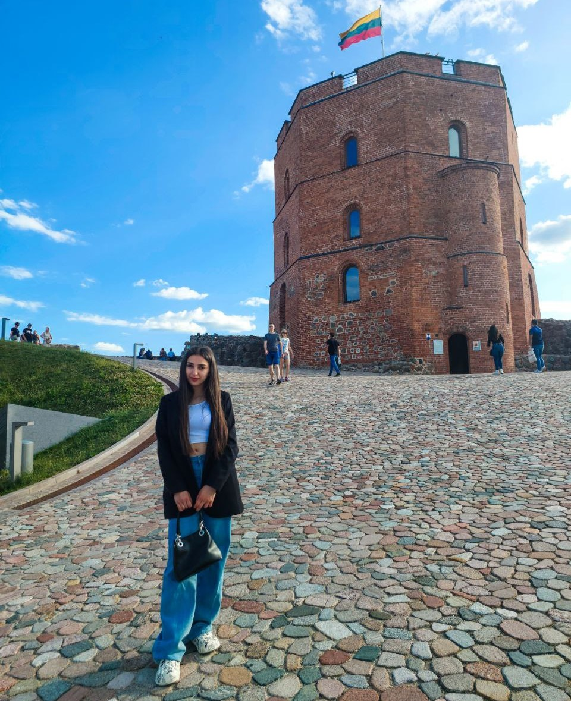

European Solidarity Corps
My experience as an Erasmus+ volunteer for the European Solidarity Corps in Vilnius was a transformative journey that strengthened my passion for community engagement and cross-cultural collaboration. During this time, I had the opportunity to work on meaningful projects that promoted social inclusion, youth empowerment, and active citizenship. Engaging with diverse communities, organizing events, and contributing to social initiatives allowed me to develop valuable leadership, communication, and problem-solving skills. This experience not only broadened my global perspective but also reinforced my commitment to making a positive impact through volunteerism and fostering connections across cultures.